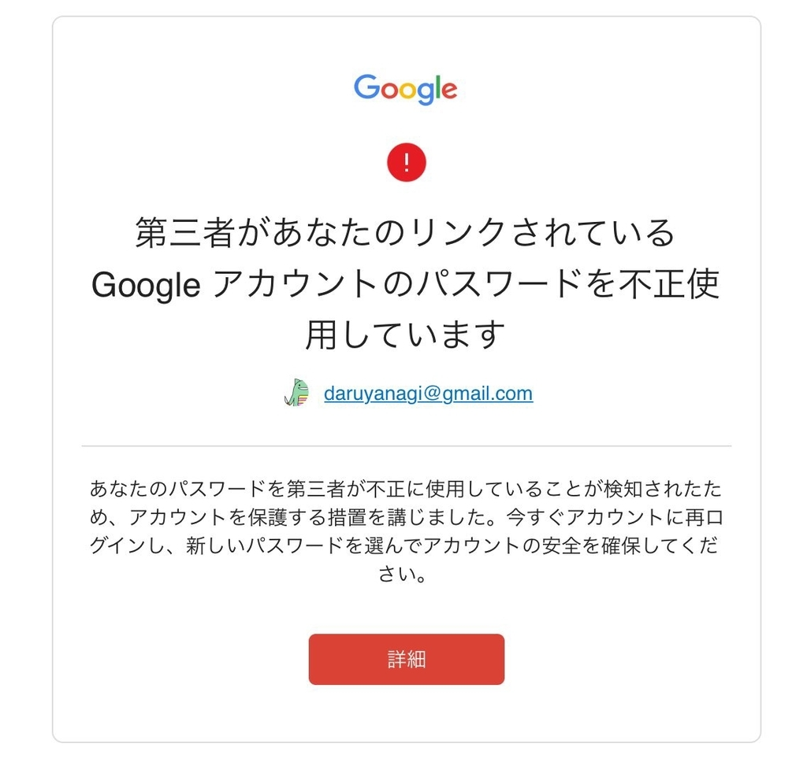
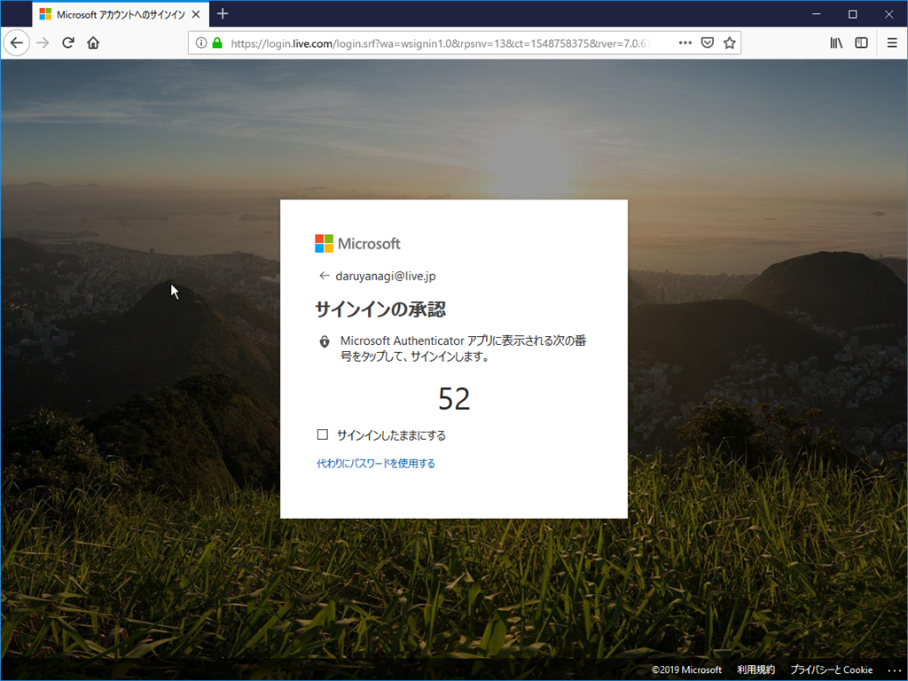

1月24日：パスワードの不正使用
公開日：

夜中の3時、ケータイがぶるぶるなってるので何かなぁと思って確認してみると、Google からセキュリティ通知がきてた。二要素認証を設定してあるからめったなことはないと思うけど、一応、顔洗ってパスワードの再設定をしておいた。もちろん、フィッシング詐欺じゃないか、何度も確認してからだ。寝起きでフィッシングに引っかかったなんてことになったら、目も当てられない。
実をいうと、Google やら Microsoft といった重要なアカウントのパスワードは、手入力の機会も多いため、自分が覚えやすいように比較的弱いものになっている（あまり使わないサービスは 1password を毎回引いている＋ブラウザーの記憶に頼る）。まぁ、ぶっちゃけると、とある製品のモデルナンバーに脳内ルールで大文字小文字を混ぜているだけだ。たぶんこれでも外部からの推測は容易ではないけれど、パスワード管理ツールが生成してくれるような強いものじゃない。

そんな感じで、今までは結構適当にやってきたけど、昨今、そうもいかない感じ。ちょっと面倒だけど、パスワード管理の運用はもうちょっと厳格にやっていかなきゃいけないかなぁ、なんて思わんでもない。よく考えれば、Microsoft のアカウントは「Microsoft Authenticator」アプリでパスワードレスログインができるのだから、もっと複雑なパスワードにして、1Password に覚えさせておけばいい。これは後でやっておこう。
Google アカウントもパスワードレスログインができたらいいんだが、「Microsoft Authenticator」に相当すると思われる「Google 認証システム」は二段階認証のためのアプリで、パスワードレスログインを実現するものではないのかな。2015年末に「パスワードレスログインをテスト中」というニュース記事はたくさん引っかかるんだが（できるんだったら、やり方教えてほしい！）。
そもそも自分は Google アカウントも 3つ も使い分けていて（歴史的事情で……）、結構めんどくさい。そこんところから直していこうと思った。